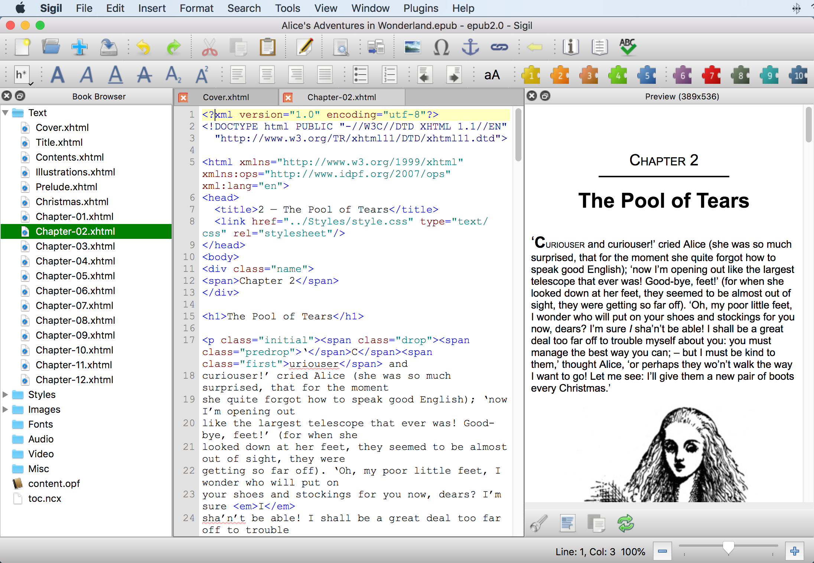
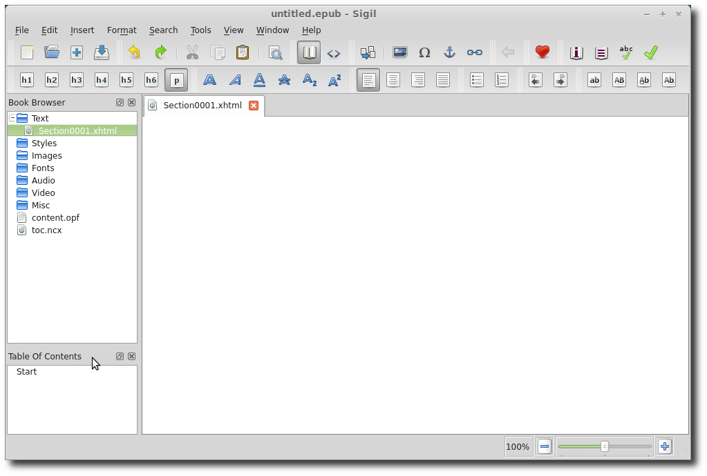
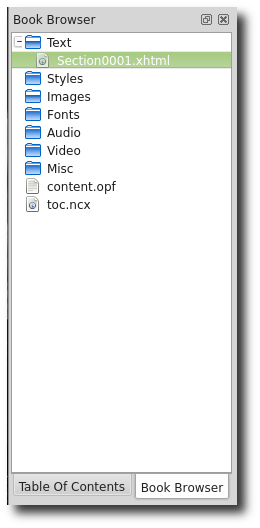
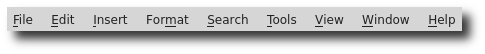
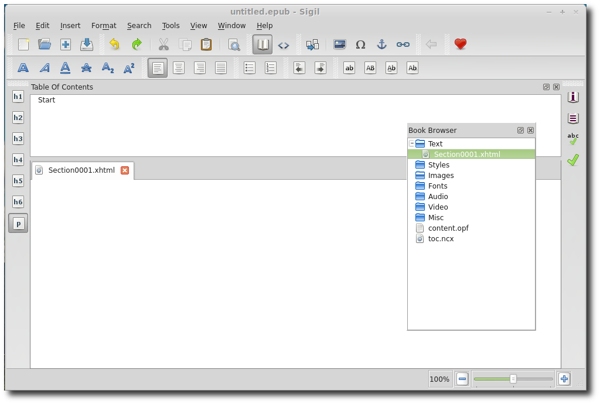
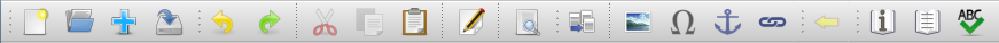
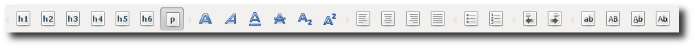
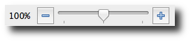
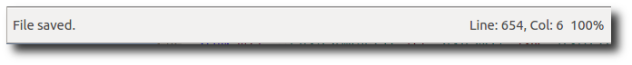
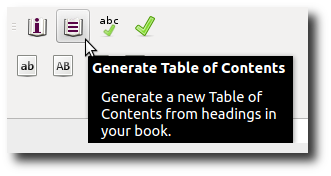

User Interface
— Windows, Menus and Toolbars —

Sigil’s user interface consists of:
- Windows: Displays for information like Code View, Book Browser, and TOC.
- Main Menu: Most of the available commands, like , are listed here.
- Toolbar Buttons: Movable buttons that provide quick access to many menu items.
- Keyboard Shortcuts: User-definable shortcuts for all menu items, like Ctrl+S to save your file.
- Context Menus: Commands shown when you right-click on something, like a filename or window.
The screenshots in the User Guide may be slightly different to what you see on your computer.
Windows
Sigil uses various windows in the main interface to present information: a window to show your files, to edit your book, to view your table of contents, etc.
Windows can be hidden – use the menu entry to show or hide specific windows.
Certain windows can be also moved. To move a window, click on its header label and drag it to its new location. For instance you can place the Table of Contents under the Book Browser:

You can also create tabs for the Table of Contents and the Book Browser, and other windows, if you drag and drop it directly on the Book Browser window instead of just above or below it:

You can even undock windows (separate them from the main Sigil window). To undock a window, double-click on the heading of the window. In some OS’s you can also undock and re-dock the windows by clicking on the little button in the top right corner of the window.
Keyboard Shortcuts
Keyboard shortcuts (e.g. Ctrl+S for Save) are shown next to menu entries and in .
You can create or change keyboard shortcuts in Preferences.
Main Menu
This is the list of menu items that is always at the top of Sigil’s window or your screen:

File
- New: Create a new, empty EPUB.
- Open: Open an EPUB or HTML file from your computer.
- Add:
- Existing Files: Add HTML files, images, etc. from your computer.
- Blank HTML File: Create a new HTML file in the book.
- Blank Stylesheet: Create a new CSS Stylesheet in the book.
- Blank SVG Image File: Create a new SVG image file in the book.
- Save: Save your file (use often!).
- Save As: Save your file under a different name.
- Save A Copy: save a copy of your file under a different name without renaming your current file (useful for backups).
- Print Preview: Preview the printing of the current tab.
- Print: Print the current tab.
- List of recently opened files.
- Quit: Exit Sigil, asking if you want to save your file first if it hasn’t been saved.
Edit
- Undo: Restore text just deleted, inserted or replaced.
- Redo: Reverse the last Undo.
- Cut: Remove the selected text and store it for paste.
- Copy: Copy the selected text and store it for paste.
- Paste: Insert previously cut or copied text into your document.
- Paste from Clipboard History: Insert text automatically saved in a list when you used cut or copy.
- Delete Line: Delete the current line in Code View.
- Change Case:
- Lowercase: Change the selected text to lowercase.
- Uppercase: Change the selected text to uppercase.
- Titlecase: Change the first letter of each selected word to uppercase.
- Capitalise: Change the first letter of the selection to uppercase.
- Split at Cursor: Split the current file into two files immediately.
- Split at Markers: Split all files at previously inserted chapter markers.
- Preferences: Open the Preferences window to change options.
Insert
- Split Marker: Insert a marker to use for Split at Markers.
- File: Insert an image, audio, or video file from your book or your computer.
- Special Character: Insert special characters from a list.
- ID: Insert an anchor name that can be used with links.
- Link: Insert a link to something in your document or anywhere else.
- Closing Tag: In Code View insert a tag to close the last unclosed tag.
- Clip: Select a Clip to insert and view shortcuts for clips.
Format
- Heading:
- Heading 1: Format the paragraph as a level 1 heading.
- Heading 2: Format the paragraph as a level 2 heading.
- Heading 3: Format the paragraph as a level 3 heading.
- Heading 4: Format the paragraph as a level 4 heading.
- Heading 5: Format the paragraph as a level 5 heading.
- Heading 6: Format the paragraph as a level 6 heading.
- Normal: Format the paragraph as normal text.
- Preserve existing attributes: Keep attributes like class when formatting.
- Bold: Make text bold.
- Italic: Make text italic.
- Underline: Make text underlined.
- Strikethrough: Make text striked through.
- Subscript: Make text subscript.
- Superscript: Make text superscript.
- Align Left: Align text to the left margin (use remove formatting to reset to default).
- Center: Align text centered on the screen.
- Align Right: Align text to the right margin.
- Justify: Align text to left and right margins.
- Bulleted List: Change text into a list of items preceded by dots.
- Numbered List: Change text into a list of items preceded by numbers.
- Decrease Indent: Decrease the indentation of the text.
- Increase Indent: Indent the text.
- Text Direction LTR: Set the direction of text from left to right.
- Text Direction RTL: Set the direction of text from right to left.
- Text Direction Default: Set the direction of the text to the default.
- Remove Formatting: delete tags in Code View.
Search
- Find & Replace: Open the Find & Replace window.
- Find Next: Search forwards for the next matching text.
- Find Previous: Search backwards for the next matching text.
- Replace: Replace any matched text.
- Replace/Find Next: Replace any matched text and search forwards for the next matching text.
- Replace/Find Previous: Replace any matched text and search backwards for the next matching text.
- Replace All: Replace every matching text according to the Find & Replace settings.
- Count All: Count every matching text according to the Find & Replace settings.
- Current File:
- Find Next In File: Find only in the current file regardless of F&R mode.
- Replace Next In File: Replace/Find Next only in the current file regardless of F&R mode.
- Replace All In File: Replace All only in the current file regardless of F&R mode.
- Count All In File: Count All only in the current file regardless of F&R mode.
- Bookmark Location: Bookmark your current location in Code View.
- Go To Link Or Style: Go to the selected link or go to the CSS style for this tag.
- Back: Go back to where you set a bookmark, clicked a link or used Go to Link or Style.
- Mark Selected Text: Mark the selected text in Code View for use with Find & Replace.
- Go To Line: Jump to a specific line number in Code View.
Tools
- Add Cover: Select an image to make it the cover.
- Metadata Editor: Open the Metadata Editor to edit book details.
- Table Of Contents:
- Generate Table Of Contents: Use predefined headings to generate a TOC.
- Edit Table Of Contents: Edit the TOC manually.
- Create HTML Table Of Contents: Create an HTML file version of the TOC.
- Index:
- Index Editor: Manage your index entries.
- Add To Index Editor: Add the selected text to the Index Editor list.
- Mark For Index: Add the selected text to the index when it is created.
- Create Index: Create an HTML file containing the index list.
- Spellcheck:
- Spellcheck: Open dialog to spellcheck all words at once.
- Highlight Misspelled Words: Toggle highlighting misspelled words in Code View.
- Next Misspelled Word: Find the next misspelled word in Code View.
- Add Misspelled Word: Add the misspelled word to the default dictionary.
- Ignore Misspelled Word: Ignore the misspelled word temporarily while Sigil is running. Ignored words are also cleared when you open a new book.
- Clear Ignored Words: Clear the list of temporarily ignored words.
- Reformat HTML:
- Mend and Prettify all HTML Files: Fix HTML syntax errors in all HTML files and pretty-print them.
- Mend all HTML Files: Fix HTML syntax errors in all HTML files.
- EPUB3 Tools:
- Update Manifest Properties: Add or update mandatory manifest properties.
- Generate NCX from Nav: Populate the NCX file with TOC entries from the NAV file (the NCX isn't kept up to date automatically in EPUB3s since the ncx isn’t required).
- Validate Stylesheets With W3C: Check if your CSS files are valid using the W3C web service.
- Reports: Display various details about HTML files, images, CSS styles, etc.
- Clip Editor: Edit and paste snippets of text and styles into your document.
- Saved Searches: Edit and run saved Find & Replace searches.
- Delete Unused Media Files: Remove unlinked image, video, and audio files from your book.
- Delete Unused Stylesheet Classes: Remove unreferenced classes from CSS files.
View
- Toolbars
- File: Show or hide the open and save buttons.
- Edit: Show or hide the undo and cut buttons.
- Insert: Show or hide the insert chapter and image buttons.
- Back: Show or hide the Back button.
- Donate: Show or hide the Donate button.
- Tools: Show or hide the Tools buttons.
- Heading: Show or hide the heading buttons.
- Format: Show or hide the bold and formatting buttons.
- Align: Show or hide the text alignment buttons.
- List: Show or hide the numbered list buttons.
- Indent: Show or hide the indent buttons.
- Change Case: Show or hide the change case buttons.
- Text Direction: Show or hide the text direction buttons (off by default).
- Clip Bar: Show or hide buttons used for Clips (off by default).
- Zoom In: Increase the size of text and images in the view.
- Zoom Out: Decrease the size of text and images in the view.
- Zoom Reset: Reset the window zoom to 100%.
- Book Browser: Open or close the list of files in the EPUB.
- Clips: Open or close a selectable list of all Clips.
- Preview: Open or close a live preview window.
- Table of Contents: Open or close a clickable TOC window.
- Validation Results: Open or close the validation window.
Window
- Next Tab: Change view to the following tab.
- Previous Tab: Change view to the preceding tab.
- Close Tab: Close the current tab.
- Close Other Tabs: Close all tabs other than the current tab.
- Previous File: Open the file above the selected file in the Book Browser.
- Next File: Open the file below the selected file in the Book Browser.
Plugins
- Manage Plugins: Install or uninstall plugins.
- Edit: Run Edit plugins.
- Validation: Run Validation plugins.
- Input: Run Input plugins.
- Output: Run Output plugins.
Help
- User Guide: The official Sigil User Guide.
- Tutorials: Step by step guides to using Sigil.
- Frequently Asked Questions: Common questions about Sigil.
- Donate: How to donate to ongoing development.
- Report an Issue: How to submit a bug report.
- Sigil Website: Occasional updates about development.
- About: Sigil version and author information.
Toolbars are the rows of buttons at the top of the window. But the buttons don’t have to remain at the top of the screen – you can click and drag groups of buttons anywhere you want (shown here with an undocked Book Browser and Table of Contents at top):

Main Toolbar
The main toolbar contains buttons used for shortcuts to Sigil’s main features:

To move buttons, click and hold on the small bar to the left of each button group then drag it to where you want it.
Right-click on the toolbar to easily select which buttons or windows to show.
The buttons are listed below, with their equivalent menu entry:
The formatting toolbar contains buttons used mostly for formatting text. This is the default toolbar:

Clip Bar
- Buttons are created for the first 20 Clips not in a group.
Text direction and the Clip Bar are not visible by default. Use to hide/unhide button groups.
Context Menus are menus that appear when you right-click on text, a label, a window, a tab, a header, a text box, etc. – like a file name in the Book Browser, or selected text in Code View. Context menu items are discussed in related chapters:
When in doubt, right-click on something to see if there are additional actions available!
Zoom
On the lower right of the main window is a zoom control that lets you shrink or enlarge the text and images independently in Code View, and the Preview window:

The 100% indicates the zoom level of the view and this percentage will increase or decrease when you click on the + or – icons.
Changing the zoom level on Preview will only work when the Preview widget is docked.
Status Bar
The bottom area on the main window (to the left of the zoom control) will occasionally list status information when an action is completed.
The status bar can also show information about the currently opened file, such as Line and Column in Code View:

Many of the buttons, dropdown boxes, labels and fields have tooltips that provide information on how they are used.
To see a tooltip just hover your mouse over the button or other item and the help text should be displayed:

There are many tooltips available in Sigil – most dialogs and buttons will provide some help text.